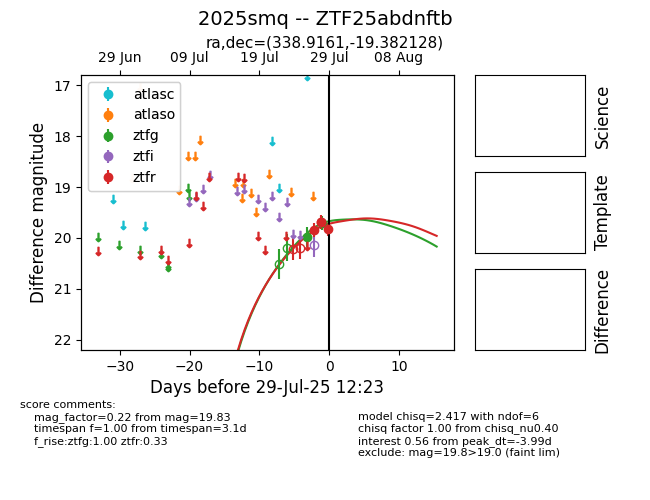

Target 2025smq at 2025-07-29 12:23, see:
FINK: fink-portal.org/2025smq
Lasair: lasair-ztf.lsst.ac.uk/objects/2025smq
ALeRCE: alerce.online/object/2025smq
TNS: wis-tns.org/object/2025smq
YSE: ziggy.ucolick.org/yse/transient_detail/2025smq
alt names
ZTF25abdnftb (ztf,fink)
2025smq (tns,yse)
coordinates:
equatorial (ra, dec) = (338.9161,-19.38213)
galactic (l, b) = (39.5897,-57.97394)
photometry
last ztfg=19.71, ztfr=19.83
2 ztfg, 4 ztfr detections
